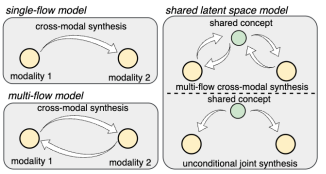

Learning From Design Procedure To Generate CAD Programs for Data Augmentation

Large Language Models (LLMs) have demonstrated impressive capabilities in a wide range of code generation tasks. However, generating code for certain domains remains challenging. One such domain is Computer-Aided Design (CAD) program, where the goal is to produce scripted parametric models that define object geometry for precise design and manufacturing applications. A key challenge in LLM-based CAD program generation is the limited geometric complexity of generated shapes compared to those found in real-world industrial designs. This shortfall is in part due to the lack of diversity in the available CAD program training data. To address this, we propose a novel data augmentation paradigm that prompts an LLM to generate CAD programs conditioned on a reference surface program and a modeling procedure - an idea inspired by practices in industrial design. By varying the reference surface using a collection of organic shapes, our method enriches the geometric distribution of generated CAD models. In particular, it introduces edges and faces defined by spline-based curvature, which are typically missing or underrepresented in existing open-source CAD program datasets. Experiments show that our method produces CAD samples with significantly greater geometric diversity and a higher resemblance to industry-grade CAD designs in terms of the proportion of organic shape primitives. This enhancement makes our CAD data augmentation approach a useful tool for training LLMs and other deep learning models in CAD generation.
View paper →